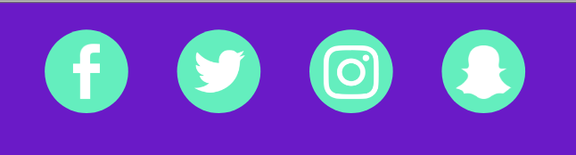

Het logo heb ik zelf ontworpen, ik heb dit met het programma ‘Adobe Illustrator’ gemaakt. Mijn festival noemt ‘SunnyRain’ dus ik wou iets maken waarbij de regen over de zon heen gaat.
Via deze icoontjes kan je alle social media bezoeken die gelinkt zijn met SunnyRain Festival. In dit geval geldt dat voor Facebook, Twitter, Instagram en Snapchat.
Dit zijn de knoppen waarmee je doorheen de website kan navigeren. Een Home knop om terug naar de beginpagina te keren, een line-up knop waarbij je naar de line-up geleidt word, een info knop waarbij je naar de pagina met info navigeert en ten slotte een knop om je tickets te betellen.
De mogelijkheid om de pagina van taal te veranderen. In dit geval kan je de pagina in het Nederlands en in het Engels zetten.
Een zoek knop waarmee bezoekers gemakkelijk doorheen de site kunnen navigeren als ze iets niet vinden.
Hierdoor hebben gebruikers de mogelijk mij te contacteren indien ze vragen hebben. In dit geval kan dat via GSM of via E-mail.